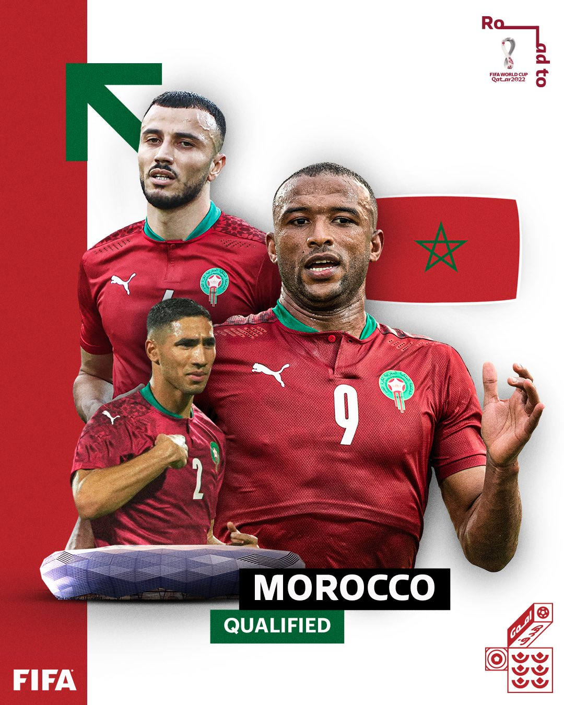

Meilleur joueur
ACHRAF HAKIMI
Qualifiée pour sa sixième Coupe du Monde de la FIFA™, la sélection marocaine s'avance avec son lot de certitudes mais aussi quelques zones d'ombre. Achraf Hakami, Sofiane Boufal et consort ont toutefois bon espoir de s'extraire de leur groupe
L'équipe du Maroc de football, surnommée « les Lions de l'Atlas », représente le Maroc dans les compétitions internationales masculines de football. Elle a été créée en 1916 et son premier match officiel a eu lieu en octobre 1957 contre l’équipe d’Irak (score : 3-3).
Le Maroc aborde sa sixième Coupe du Monde de la FIFA™. Lors de leur première apparition en 1970, les Lions de l'Atlas n'ont ramené qu'un point en trois sorties. Défaits par la RFA (2-1) puis par le Pérou (3-0), ils ont sauvé l'honneur en décrochant un nul face à la Bulgarie (1-1).
Leur deuxième participation reste la plus mémorable. En 1986, Abdelkrim Merry, Aziz Bouderbala et consorts ont battu le Portugal (3-1) après avoir tenu la Pologne (0-0) et l'Angleterre (0-0) en échec. Qualifiés pour le deuxième tour, ils se sont inclinés sur la plus petite des marges devant la RFA en huitièmes de finale.
Les éditions 1994, 1998 et 2018 les ont vus s'arrêter en phase de groupes. Ils sont cependant passés tout près de franchir la phase de poules lors de France 1998, où ils ont enregistré une victoire probante 3-0 sur l'Écosse puis un nul 2-2 contre la Norvège. Ils ont aussi fait bonne impression à Russie 2018, bien qu'ils n'aient empoché qu'un point contre l'Espagne (2-2).
ACHRAF HAKIMI
WAchraf Hakimi, né le 4 novembre 1998 à Madrid, est un footballeur international marocain évoluant au poste d'arrière droit au Paris Saint-Germain. Formé au Real Madrid, il participe à l'UEFA Youth League avant de faire ses débuts en équipe première sous Zinédine Zidane, remportant la Ligue des champions 2017-2018
"le Maroc est capable de bonnes choses devant"

“Le numéro 8 du Maroc (Ounahi ) m’a impressionné. Je me rappelle plus de son nom mais j’ai halluciné lorsque je l’ai vu joué aujourd’hui.”

« je trouve que la Maroc est trés faible sur le plan individuel , ils ne peuvent méme construire un attaque>>